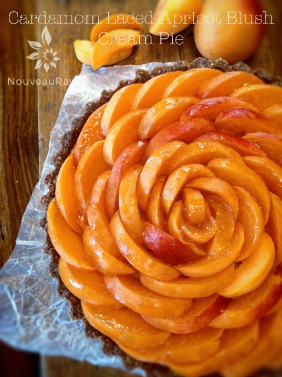

Cardamom Laced Apricot Blush Cream Pie

~ raw, vegan, gluten-free ~
For this dessert, I used one of my favorite pans… an 8″ deep dish tart pan. I have never hidden the fact that I LOVE kitchenware. Dishes, measuring spoons, measuring cups, baking pans, molds, ooooh the list goes on and on. I am a fan of all of them, and my pantry shows it. (blushes)
Apricots were the driving force for this recipe, but I couldn’t resist sneaking in a little cardamom. Cardamom’s flavor profile is complex. Not only does it have a mildly sweet flavor, but it is also heavily fragrant with a perfume that gives it a warm, resinous aroma.
Both of these attributes enhance both the sweetness and the tartness of fresh apricot. Keep in mind that a little goes a long way. I used 1/2 tsp in my recipe, but I recommend starting with 1/4 tsp and build up from there if desired. You can always add but can’t take away.
For this recipe be sure to use ripe apricots. They are easier to digest, and they have a higher level of sweetness. Always taste test the apricots when adding them to the recipe. If they aren’t very sweet, you may need to adjust the amount of sweetener.
If you are new to creating raw desserts that are cashew-based, you will notice that the ingredients list calls for 2 cups of cashews. They need to be soaked, and this is a step that can’t be skipped. This will help to soften them, so they blend into a creamy batter. Two cups of cashews, once soaked will swell up to about 3 cups of cashews. This is normal and what we want.
For this dessert to thicken and hold the structure, I used coconut oil and lecithin. Both are paramount ingredients in making this dessert successful. Without them, you will have pudding, and nothing is wrong with that, but if you want a pie-like texture, please use them. In the ingredient list below I created links to where you can use either the soy-based powder form or a sunflower based liquid lecithin. Either one is fine. I don’t recommend omitting it or substituting.
This dessert will bring a decadent finish to any meal. The crunchy, almond crust is made up of ground-up almonds, oats, and cacao, which holds the creamy, silky texture of creamed cashews and fresh ripe apricots that are then faintly laced with a pinch of cardamom. Yep, it’s official, that was one heck of a run-on sentence. lol
 Ingredients:
Ingredients:
Yield 8- 10″ deep Quiche pan
Crust:
- 1/2 cups rolled, gluten-free oats
- 1 cups raw almonds, soaked & dehydrated
- 2/3 cup shredded coconut
- 1/4 cup raw cacao powder
- 1/8 tsp Himalayan pink salt
- 1/2 tsp liquid stevia
- 1/4 cup coconut butter, softened
- 1/4 cup water
- 2 Tbsp maple syrup
Cheesecake filling:
- 2 cups of raw cashews, soaked for 2 hours
- 6 ripe organic apricots, skinned and deseeded
- 1/4 cup + 2 Tbsp maple syrup
- 1 Tbsp lemon juice
- 1/2 tsp liquid stevia
- 2 tsp liquid vanilla
- 1/4 – 1/2 tsp ground cardamom
- 1/4 tsp Himalayan pink salt
- 3 Tbsp sunflower lecithin powder or liquid
- 3/4 cup coconut oil, melted
Topping:
- 8-10 semi-firm organic apricots
- 1 Tbsp maple syrup
Preparation:
Crust:
- In the food processor, fitted with the “S” blade, pulse the oats and almonds into small pieces. Add coconut, cacao, and salt, pulse together. Now add the stevia, and coconut butter, water, and maple syrup processing until well combined.
- Process all ingredients until the crust starts to rise on the sides of the bowl. Be sure to stop and scrape the sides down.
- Lightly grease the pan with coconut oil or line with plastic wrap.
- Distribute the crust evenly on the bottom of the pan, using even and gentle pressure. You can either make the crust just on the bottom of the pan, or you can also bring it up the sides. It is up to you.
- Set aside while you make the batter.
Filling:
- After soaking the cashews, drain and rinse.
- Add to a high-speed blender; cashews, apricots, maple syrup, lemon juice, stevia, vanilla, cardamom, and salt. Blend until creamy. This can take 3-5 minutes depending on your machine. Step occasionally to test for grittiness. Feel grit? Keep blending.
- While the blender is running and a vortex is formed, drizzle in the coconut oil and lecithin. Resume blending until all is well incorporated.
- Pour the batter into the pan. Lightly tap the pan on the countertop to help work out any air bubbles that may be trapped in the batter. Be careful; sometimes it can “burp” and spray little batter droplets on your shirt. :)
- Place in the fridge overnight to chill or in the freezer.
Topping:
- The number of apricots needed will depend on the size of apricots that you have available to you. I recommend always buying a few more than what you think you might need. Or cash in that favor that your partner owes you if another trip to the store is needed. :)
- Wash and dry the apricots. Follow the natural seam in the apricot and cut it in half. Remove the pit. Lay the apricot cut side down on a cutting board. With a sharp knife, cut 1/4-1/2′” slices at a slight angle. If the apricots are really ripe, the slice may need to be a bit larger, so it holds up to being arranged on the pie.
- After all the slices have been made, use the larger slices for the outside rim of the pie and as your circle closes in, go down in size on the apricot slices.
- As you place the slices on the pie, overlap them. You can see this in the photo below. Go around and around and around until the top of the pie is covered.
- Place the 1 Tbsp of maple syrup in a small bowl. Dip a pastry brush into it and put a light coating of maple syrup over the top of the apricot slices. This will give them a sheen and prevent them from turning color on you.
- Do not freeze the pie after the fresh fruit has been put on top unless you plan to serve it frozen. Otherwise, the fruit will get watery and limp looking when it defrosts.
- Cover with plastic wrap and keep in the fridge until ready to serve. I wouldn’t leave the pie out at room temperature for more than 1 hour. If your house is really warm, keep an eye on the pie.
- This pie should keep for 3-5 days in the fridge or 1 month in the freezer.
- Ready to cut the cake? Check out my post on how to slice a cake: click here.
© AmieSue.com